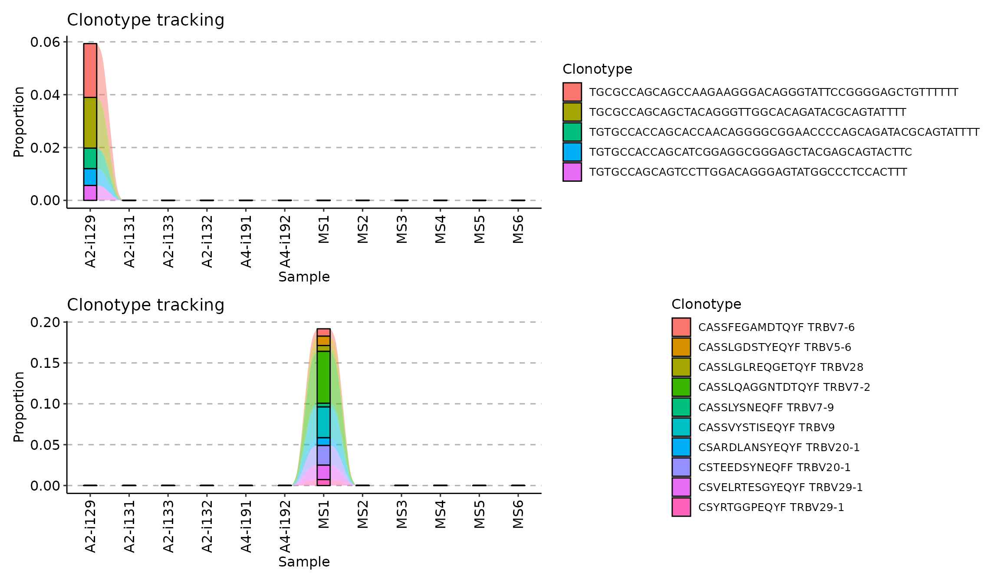
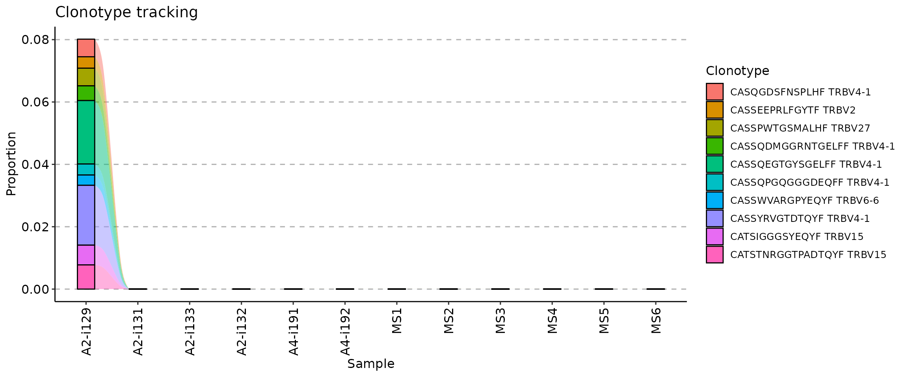
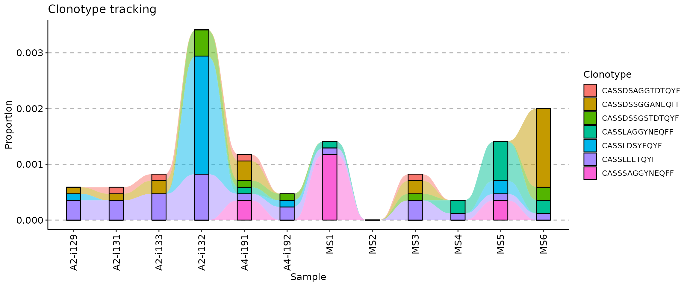
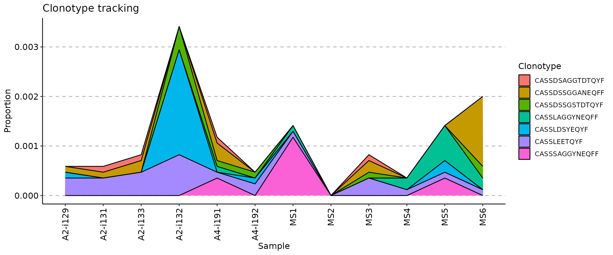
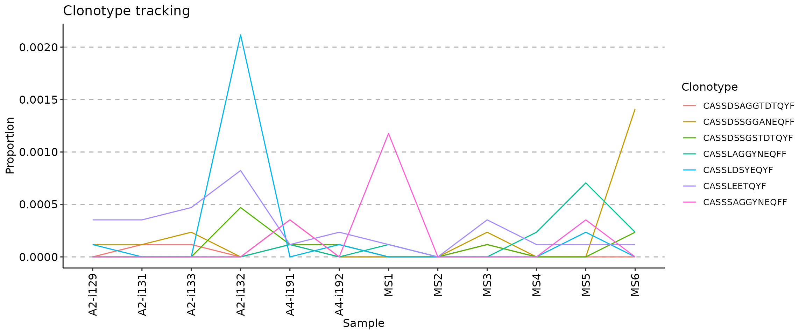
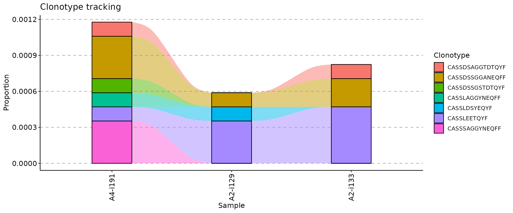
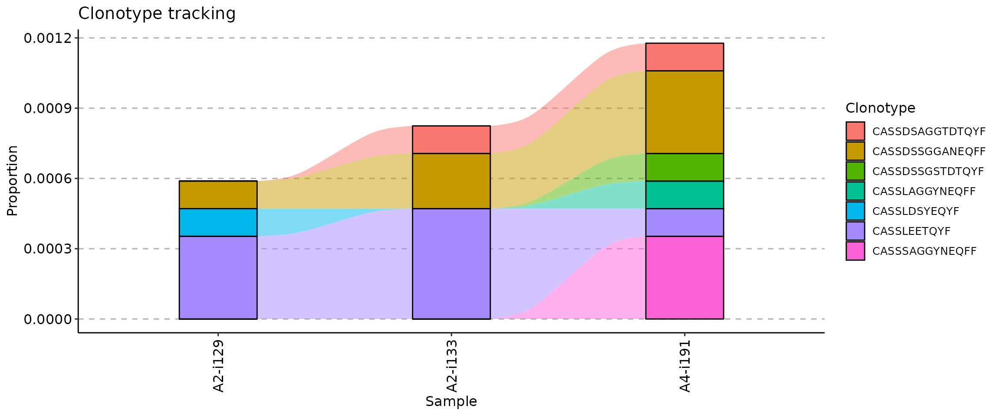
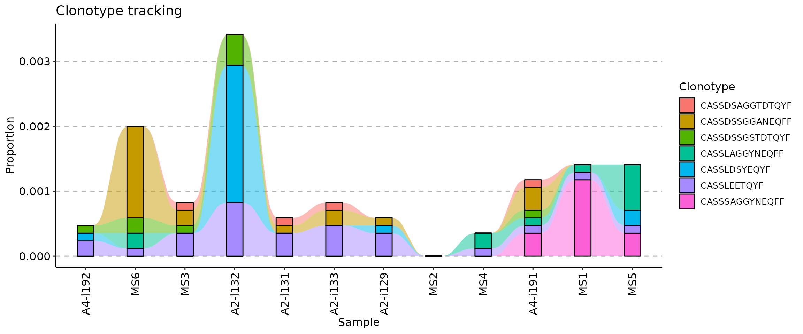
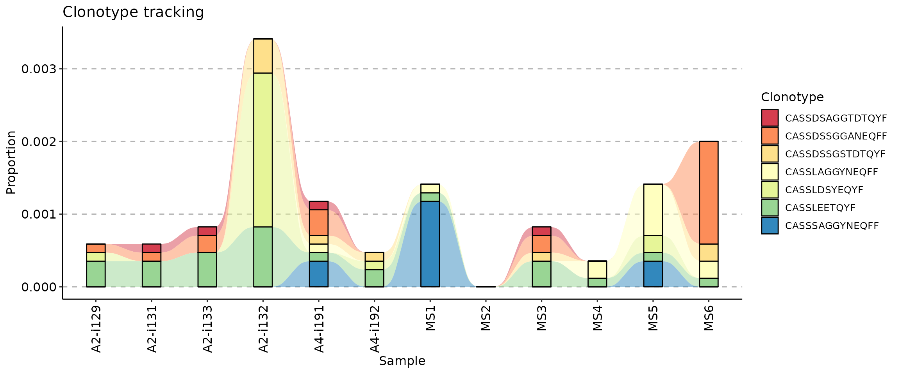
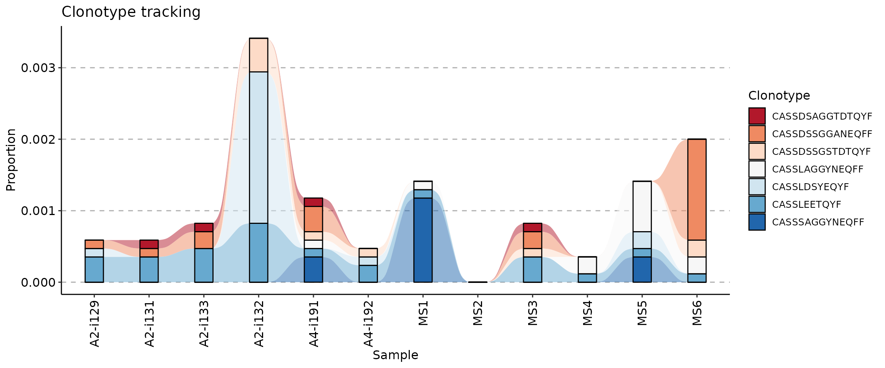

Tracking clonotypes across time points in `immunarch`
ImmunoMind – improving design of T-cell therapies using multi-omics and AI. Research and biopharma partnerships, more details: immunomind.io
support@immunomind.io
Source:vignettes/web_only_v0/v8_tracking.Rmd
v8_tracking.RmdTracking of clonotypes
Clonotype tracking is a popular approach to monitor changes in the frequency of clonotypes of interest in vaccination and cancer immunology. For example, a researcher can track a clonotype across different time points in pre- and post-vaccination repertoires, or analyse the growth of malignant clonotypes in a tumor sample.
Various methods of clonotype tracking are integrated into the one
trackClonotypes function. Currently, there are three
methods to choose from. The output of trackClonotypes can
be immediately visualised with the vis function.
Tracking the most abundant clonotypes
The simplest approach is to choose the most abundant clonotypes from
one of the input immune repertoires and track across all immune
repertoires in a batch. Arguments .which and
.col are used to choose the immune repertoire, the number
of clonotypes to take from it and which columns to use.
To choose the top 10 most abundant clonotypes from the first repertoire and track them using their CDR3 nucleotide sequence use this code:
tc1 <- trackClonotypes(immdata$data, list(1, 5), .col = "nt")Value list(1, 5) of the .which argument
(the second argument) means to choose 10 clonotypes from the 1st
repertoire in the input list of repertoires immdata$data.
Value "nt" of the .col argument means that the
function should apply to CDR3 nucleotide sequences only.
To choose the 10 most abundant amino acid clonotype sequences and their V genes from the “MS1” repertoire to track:
tc2 <- trackClonotypes(immdata$data, list("MS1", 10), .col = "aa+v")Value list("MS1", "10") of the .which
argument means to choose 10 clonotypes from the repertoire named “MS1”
in the input list of repertoires immdata$data. Value
"aa+v" of the .col argument means that the
function should take both CDR3 amino acid sequences and V gene segments
of the most abundant clonotypes.
Visualisation of both approaches:

Tracking clonotypes with specific nucleotide or amino acid sequences
In order to track specific clonotype sequences, you can provide
nucleotide or amino acid sequences as the .which argument,
along with the column .col specifying in which columns to
search for sequences. For example, to track seven CDR3 amino acid
sequences specified below you need to execute the following code:
target <- c("CASSLEETQYF", "CASSDSSGGANEQFF", "CASSDSSGSTDTQYF", "CASSLAGGYNEQFF", "CASSDSAGGTDTQYF", "CASSLDSYEQYF", "CASSSAGGYNEQFF")
tc <- trackClonotypes(immdata$data, target, .col = "aa")
vis(tc)
Tracking clonotypes with specific sequences and gene segments
An improvement upon the previous approach, it is possible to track clonotypes using information about both sequences and gene segments. For support you can use a data frame of sequences with specific CDR3 sequences and gene segments. We will simulate this below by choosing the 10 most abundant clonotypes from the first repertoire in the batch:
## # A tibble: 10 × 2
## CDR3.aa V.name
## <chr> <chr>
## 1 CASSQEGTGYSGELFF TRBV4-1
## 2 CASSYRVGTDTQYF TRBV4-1
## 3 CATSTNRGGTPADTQYF TRBV15
## 4 CATSIGGGSYEQYF TRBV15
## 5 CASSPWTGSMALHF TRBV27
## 6 CASQGDSFNSPLHF TRBV4-1
## 7 CASSQDMGGRNTGELFF TRBV4-1
## 8 CASSEEPRLFGYTF TRBV2
## 9 CASSQPGQGGGDEQFF TRBV4-1
## 10 CASSWVARGPYEQYF TRBV6-6Supply this data frame as an argument value to the
.which argument to track target clonotypes:
tc <- trackClonotypes(immdata$data, target)
vis(tc)
Note that you can use any columns in the target data
frame, such as both CDR3 nucleotide and amino acid sequences and any
gene segments.
Visualisation of tracking
There are three ways to visualise clonotype tracking, depending on
your research and aesthetic needs. To choose the type of plot, you need
to provide the ".plot" parameter to the vis()
function, specifying one of three plot types: -
.plot = "smooth" - used by default, a visualisation using
smooth lines and stacked bar plots; - .plot = "area" -
visualises abundances using areas under the abundance lines; -
.plot = "line" - visualises only the lines, connecting
levels of abundances of a same clonotype between time points.
target <- c("CASSLEETQYF", "CASSDSSGGANEQFF", "CASSDSSGSTDTQYF", "CASSLAGGYNEQFF", "CASSDSAGGTDTQYF", "CASSLDSYEQYF", "CASSSAGGYNEQFF")
tc <- trackClonotypes(immdata$data, target, .col = "aa")
vis(tc, .plot = "smooth")
vis(tc, .plot = "area")
vis(tc, .plot = "line")
Changing the order of samples
The .order argument of the vis function
controls the order of samples in the visualisation. You can pass either
indices of samples you plan to visualise or sample names.
## [1] "A2-i129" "A2-i133" "A4-i191"


If your metadata contains information about time such as timepoints
for vaccination or tumor samples, you can use it to re-order samples
accordingly. In our examples immdata$meta does not contain
information about timepoints, so we will simulate this case.
First, we create an additional column in the metadata with randomly chosen time points:
## # A tibble: 12 × 7
## Sample ID Sex Age Status Lane Timepoint
## <chr> <chr> <chr> <dbl> <chr> <chr> <int>
## 1 A2-i129 C1 M 11 C A 7
## 2 A2-i131 C2 M 9 C A 5
## 3 A2-i133 C4 M 16 C A 6
## 4 A2-i132 C3 F 6 C A 4
## 5 A4-i191 C8 F 22 C B 10
## 6 A4-i192 C9 F 24 C B 1
## 7 MS1 MS1 M 12 MS C 11
## 8 MS2 MS2 M 30 MS C 8
## 9 MS3 MS3 M 8 MS C 3
## 10 MS4 MS4 F 14 MS C 9
## 11 MS5 MS5 F 15 MS C 12
## 12 MS6 MS6 F 15 MS C 2Next, we create a vector with samples in the right order, according to the “Timepoint” column (from smallest to greatest):
sample_order <- order(immdata$meta$Timepoint)Sanity check: timepoints are following the right order:
immdata$meta$Timepoint[sample_order]## [1] 1 2 3 4 5 6 7 8 9 10 11 12Samples, sorted by the timepoints:
immdata$meta$Sample[sample_order]## [1] "A4-i192" "MS6" "MS3" "A2-i132" "A2-i131" "A2-i133" "A2-i129"
## [8] "MS2" "MS4" "A4-i191" "MS1" "MS5"And finally, we visualise the data:
vis(tc, .order = sample_order)
It is possible to create a one-liner with the full pipeline from ordering to plotting:

Changing the colour palette
If you want to change the colour palette, add a ggplot2
scale_fill_* function to the plot. We recommend using
scale_fill_brewer:
vis(tc) + scale_fill_brewer(palette = "Spectral")
vis(tc) + scale_fill_brewer(palette = "RdBu")
Run ?scale_fill_brewer in the R console to learn more
about ColorBrewer and it’s colour schemes.
Get in contact with us
Cannot find an important feature? Have a question or found a bug? Contact us at support@immunomind.io